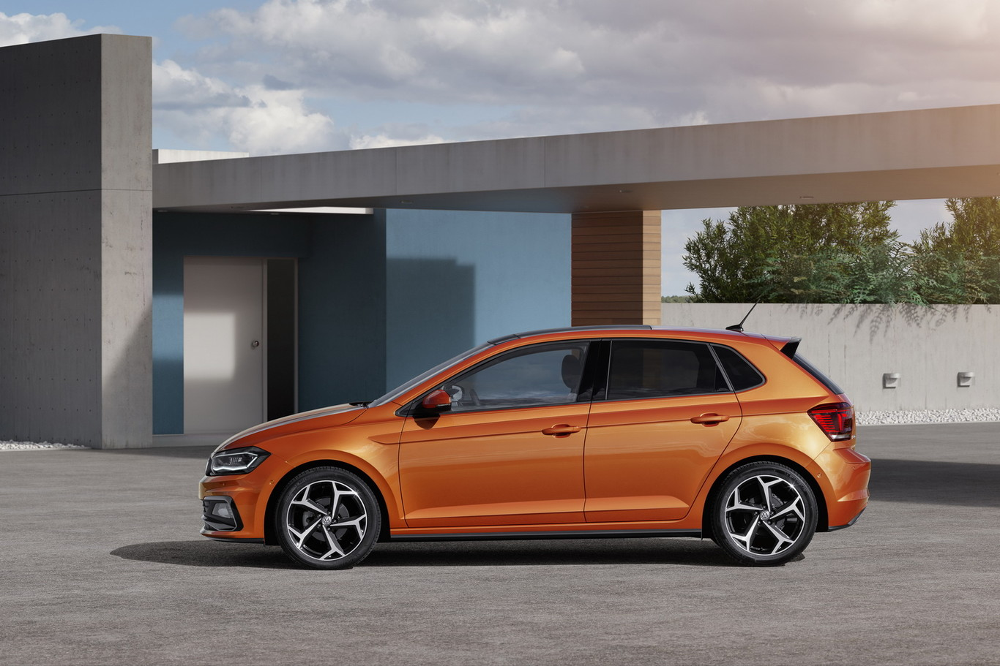

| Autos | Ubica tu consecionaria | Contacto |
|---|
El subcompacto de Wolfsburg crece 8.1 cm respecto a su generación pasada, con lo que queda en un total de 4,053 mm a lo largo. Sus cifras son apenas más cortas que la cuarta generación del Volkswagen Golf —del cual se desprendió un Jetta que hasta hace poco se hacía llamar Clásico—, aunque la distancia entre 4ejes sí es más larga: 5.3 cm, en concreto. Con una reducción de altura de apenas 7 mm y un crecimiento de 69 mm a lo ancho, Volkswagen asegura que no hay subcompacto más amplio que el nuevo Polo. La cajuela, además, ahora ofrece una capacidad de carga de 351 litros. /u>
